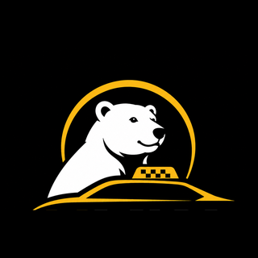

Сервис временно недоступен
Не удаётся подключиться к серверу. Проверьте интернет и попробуйте ещё раз. Мы уже работаем над восстановлением.
Пока сервис не отвечает, можно перейти в чат-бот UMKA в мессенджере MAX:
Перейти в чат-бот MAX
Попробуем снова автоматически